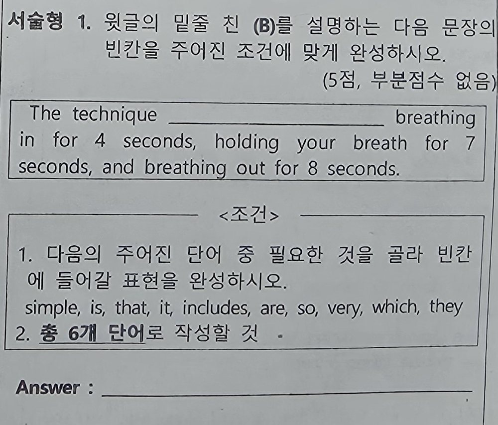
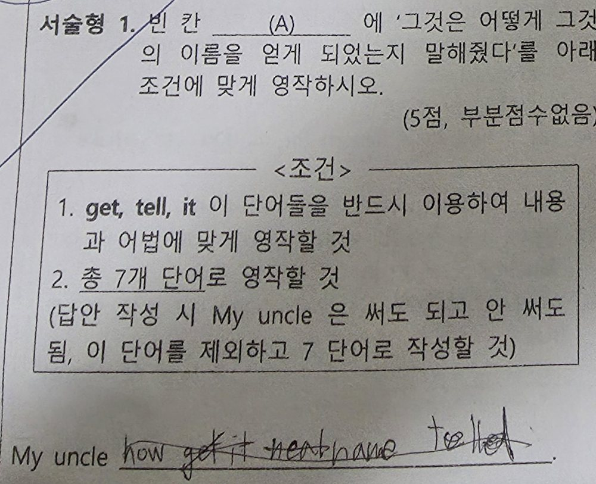
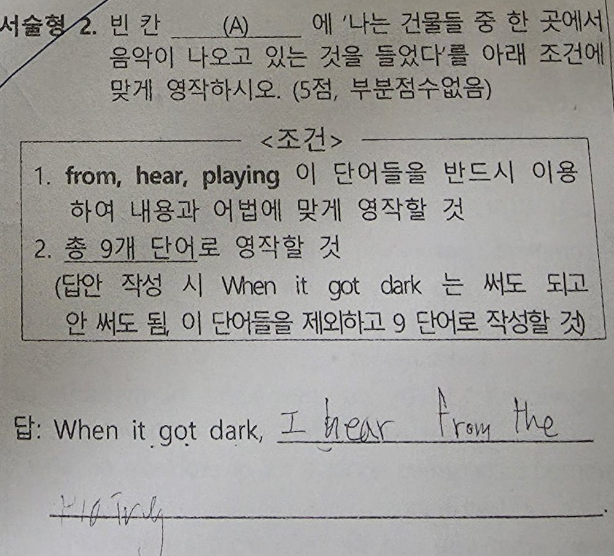

01. 이번 학습 및 수업 진행
- 학습 기간
- 9/14–9/29
- 수업
- 8회차 일정 중 7회 진행, 1회 결강
- 학습 내용
- 기초 문장 패턴, Special Lesson, Lesson 5·6, 문법
- 시험 결과
- 지난 시험 19점 → 이번 중간고사 21점
기초 문장 반복과 본문 암기·암송·영작을 진행했으나, 시험에서 정확한 답을 완성하는 데 어려움이 남아 있습니다. 과제 수행과 문제풀이 과정의 확인이 필요합니다.
8회차 수업 진행
| 회차 | 날짜 | 내용 |
|---|---|---|
| 1 | 9/14 | 패턴 학습: 형용사·수량 |
| 2 | 9/16 | 패턴 학습: 부사·비교 |
| 3 | 9/20 | 패턴 복습 청유·제안·명령·감탄·부가의문 |
| 4 | 9/21 | 결강 |
| 5 | 9/23 | Special Lesson |
| 6 | 9/27 | Special Lesson 암기 + Lesson 5 |
| 7 | 9/28 | Lesson 5 암기 + Lesson 6 |
| 8 | 9/29 | Lesson 6 암기 + 문법 |
02. 수업 내용
기초 문장 훈련
수백 문장을 한국어에서 영어로 바꾸어 말하는 방식으로 반복했습니다. 청유·제안·명령·감탄·부가의문 등의 기본 표현을 연습했습니다.
다음 수업에서도 이전에 익힌 문장을 혼자 만들 수 있는지 확인하고, 틀린 표현을 다시 연습하겠습니다.
중간고사 시험 대비
Special Lesson, Lesson 5, Lesson 6을 학습했습니다.
- 본문을 읽고 내용과 문장 구조 확인
- 본문 전체 암기
- 본문을 보지 않고 암송
- 기억한 문장을 직접 영작
본문 학습 이후 실전 문제와 서술형을 반복할 시간은 충분히 확보하지 못했습니다.
03. 중간고사 결과
| 지난 시험 | 이번 중간고사 | 차이 |
|---|---|---|
| 19점 | 21점 | +2점 |
점수는 2점 올랐지만, 아직 성취 수준은 낮습니다. 배운 어휘와 문법을 문제에 적용하고 서술형 답안을 완성하는 연습이 필요합니다.
지난 기말
제공된 사진에서 확인되는 서술형 1번 답안란은 비어 있습니다.

이번 중간
서술형 1·2번에는 단어를 적은 흔적이 있습니다. 다만 요구한 어순과 문장 구조를 갖춘 답안으로 완성하지 못했습니다.


04. 학습 과제 및 다음 계획
아직 점수로 연결되지 않는 이유
어휘 정확도
영영풀이와 비슷한 형태의 단어를 구별하는 연습이 필요합니다. 단어의 뜻을 확인하고 문맥에 맞게 선택하는 훈련을 이어가겠습니다.
문법·어법 적용
배운 규칙을 실제 문장에서 찾아 적용하는 데 어려움이 있습니다. 문법 문제를 풀 때 동사 형태와 문장 구조를 직접 확인해야 합니다.
서술형 문장 구성
이번 서술형 1·2번에는 일부 단어를 적었지만 완전한 문장을 만들지 못했습니다. 짧은 문장부터 어순과 동사 형태를 맞추어 쓰는 연습이 필요합니다.
시험 준비에서 아쉬웠던 점
과제가 충분히 수행되지 않아 다음 수업에서 이전 내용을 다시 학습하는 데 시간이 들었습니다. 진도가 늦어지면서 반복 문제풀이와 실전·서술형 훈련량이 줄었습니다.
다음에는 과제를 수행 가능한 분량으로 정하고, 수업 시작 때 완료 여부와 이해도를 확인하겠습니다.
다음 학습에서 바꿀 부분
- 과제 분량 조정
필수 과제를 짧고 명확하게 정하고, 다음 수업 시작 때 수행 여부와 이해도를 확인합니다.
- 풀이 과정 확인
문제의 요구 확인 → 근거 찾기 → 답 선택 → 제출 전 재확인의 순서로 풉니다.
- 오답 원인 구분
몰랐던 내용, 적용이 어려웠던 내용, 확인을 생략한 경우를 나누어 다시 연습합니다.
- 서술형·실전 연습
짧은 문장부터 혼자 쓰고 어순·동사·철자를 검토합니다. 본문 진도와 별도로 실전 연습 시간을 확보합니다.
05. 종합 평가
이번에는 기초 문장 훈련과 본문 독해·암기·암송·영작을 진행했습니다. 시험 점수는 19점에서 21점으로 2점 올랐지만, 학습한 내용이 충분한 정답으로 이어지지는 못했습니다.
어휘와 문법의 정확도, 서술형 문장 구성, 수업 사이의 복습을 보완해야 합니다. 이미 배운 문제를 풀 때도 요구와 근거를 확인하는 습관이 필요합니다.
다음 수업에서는 과제 수행 여부와 혼자 해결하는 과정을 확인하겠습니다. 가정에서도 정해진 과제를 마쳤는지 확인해 주시면 도움이 되겠습니다.